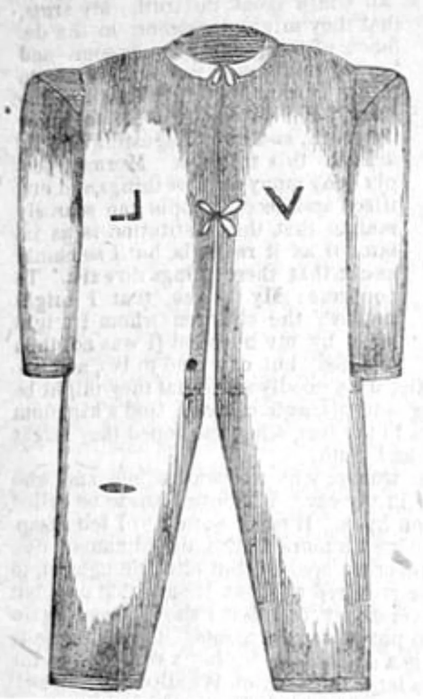

Don't say 'magic underwear' — it ends conversations
Don't useThe LDS answer holds up. Do not lead with this one.
The evidence
The line to stop using
"Magic underwear." Any version of it. Any tone.
Why it is wrong
The garment is real, and the practice is documented — that case is on this site. But this phrase is mockery, not argument.
The church's 2014 video Sacred Temple Clothing answers it directly. It compares the garment to a nun's habit, a prayer shawl and a monk's robe, and calls the phrase inaccurate and offensive.
Folk beliefs about physical protection do exist among members. They are not doctrine.
What it costs you
You become the aggressor. You trigger the persecution frame the church has already made a video about.
And you throw away the point you were reaching for. 1 Peter 3:15-16 tells us to answer with meekness and fear, and Colossians 4:6 says let your speech be with grace.
The question that does survive
It is not about fabric. It is about enforcement.
Wearing the garment is checked in the temple recommend interview. Until recently, women's garment norms were policed in some detail.
That is a question about religious control, and you can ask it respectfully.
How strong is this argument?
Do not use it, ever. Ask, do not jeer.
This is sacred to the person in front of you, and it is personal.
What to say
"How did it feel to have an interview cover your underwear?"



How they answer this — at its strongest
The church calls that phrase inaccurate and offensive, and answered it in 2014.
The garments are real and the practice is documented. That case is on this site.
But 'magic underwear' is mockery, not argument. The church's 2014 video Sacred Temple Clothing pre-empts exactly this line. It compares garments to the nun's habit, the prayer shawl and the monk's robe, and calls the phrase 'inaccurate and offensive'.
Folk beliefs about physical protection do exist among members. They are not official doctrine.
The verdict
Never use this one: it makes you the aggressor and ends the conversation.
Mocking someone's underclothing makes the Christian the aggressor. It triggers the persecution frame the church has already built a video around. And it forfeits the point you were reaching for. 1 Peter 3:15-16 asks for meekness. Colossians 4:6 asks for grace.
The case worth making is about enforcement, not fabric. Wearing is checked through temple-recommend interview questions, and until recently women's garment norms were policed in detail.
That is a question about religious control, and it survives being said respectfully. Ask, do not jeer.
Sources
- Deseret News: church releases 'Sacred Temple Clothing' video (Oct 2014)
- Church News: 'Church Produces Video on Sacred Nature and Purpose of Temple Garments'
- Newsroom: 'Church Updates Temple Garment Video'